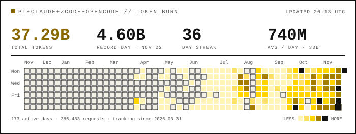

Independent developer - since 2022
I BUILD
SHARP
TOOLS.
Rust, Python, TypeScript. Coding agents, game mods, desktop apps. No fluff, no framework of the month. Just small programs that do their job.
Selected work
01 / ReposLoading repos from GitHub...
Install rustfetch
02 / Get itFast system info in Rust. One command and you are done. These small wrappers forward to the canonical installer in the rustfetch repo, with any flags passed through.
Windows / PowerShell
irm https://hakergeniusz.github.io/rustfetch/install.ps1 | iexPrefer the source? Read the rustfetch repository before running any installer.
Token burn
03 / NumbersEvery token burned by Pi, Claude, ZCode, Qwen, Gemini, OpenCode and Codex, day by day. The heatmap is generated from the live data file and restyled for this site.

About & stack
04 / WhoTools I reach for
- Rust - systems, CLIs, GTK4 apps
- Python - scripts and bots
- TypeScript - agent extensions
- wgpu / WGSL - graphics experiments
- Linux - daily driver, obviously
Built with opencode
My favorite coding agent. This site and most of the repos above were made with a lot of help from opencode. If the heatmap looks unhinged, that is why.
opencode.ai